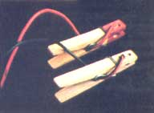

Here's yet another example of how "makin' do" can get a job done.
PHOTO BY THE AUTHOR
Wayne Fugate
Folks who enjoy fiddling with "nuts 'n' volts" often need to make temporary electrical connections... and there's a handy little item called a jumper that's designed to handle just that job. (Even people who only occasionally deal with electricity will almost certainly be familiar with the large jumpers used to start cars.)
I needed one such connector a few months back. However, a quick search through my toolbox revealed that I was flat out of the ready-made units and, though I had plenty of wire, even lacked the alligator clips that would have allowed me to put one together quickly.
Well, the nearest electrical supply store was several mountainous miles away... and while I couldn't justify wasting the trip (and the fuel) for such a small purchase, neither could I allow myself to weasel out of the job at hand for lack of a simple component.
So, with a mixture of resignation and anticipation, I set out to cobble together a homemade jumper. I began by drilling two 1/8 "-diameter holes through one jaw of each of a quartet of spring-type wooden clothespins. Then I stripped an inch or so of insulation from the ends of two four-foot lengths of soft, multistrand No. 12 copper wire.
To assemble the jumpers, I threaded a bare wire end through each spring and pair of holes (as shown in the photo). The end of the stripped wire was wrapped around the portion going into the first hole, to secure the assembly. (I was careful, though, to keep the bare wire from making contact with the springs.)
I've found that my homemade jumpers work fine in all but the tightest spots. And better still, the insulating quality of the dry wood prevents shocks!
COMING UP
Electronics bulls will enjoy making MOTHER'S electric fence powerpack. Full plans will appear in our next issue!
|
 |
|
|